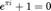
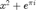

function [phi, meta] = spinodal_periodic_field(N, L, lambda_vox, bandwidth, nModes, coneDeg)
% SPINODAL_PERIODIC_FIELD Build a 3-D periodic Gaussian random field by a % discrete cosine-mode synthesis on the Fourier lattice ("torus"). % % INPUTS % N - grid size per axis (domain is N x N x N samples) % L - physical side length of the box (coordinates in [0, L]) % lambda_vox - target wavelength in voxels (controls typical feature size) % bandwidth - relative thickness of the spectral shell retained % nModes - number of Fourier modes to sample from the shell % coneDeg(1:3) - cone half-angles (deg) about x,y,z; <90 restricts directions % % OUTPUTS % phi - periodic field (double, N x N x N), zero-mean/unit-std % meta - struct with parameters and effective number of modes % % NOTES ON PERIODICITY % Using integer lattice indices (k_x, k_y, k_z) ensures that % cos(2*pi*(k_x*x/L + k_y*y/L + k_z*z/L) + phase) is exactly periodic % across opposite faces. Summing such modes preserves periodicity. % --- Grid in real space (0..L) ------------------------------------------ % Equally spaced sample coordinates; ndgrid returns 3-D coordinate arrays. x = (0:N-1)/N * L; [X,Y,Z] = ndgrid(x,x,x); % --- Target |k| in index-units ------------------------------------------ % For a discrete grid, spatial period (in voxels) ≈ N/|k_index|. % We keep a thin spherical shell in index space around k_target_idx. k_target_idx = N / lambda_vox; % e.g., lambda=16 -> k≈8 (index units) k_lo = (1 - bandwidth) * k_target_idx; k_hi = (1 + bandwidth) * k_target_idx; % --- Enumerate integer k-vectors on the 3D Fourier lattice -------------- % Continuous wavenumber magnitudes are proportional to integer indices. % Periodicity follows from restricting to integer index triplets. kk = -floor(N/2):floor((N-1)/2); % symmetric index set [KX,KY,KZ] = ndgrid(kk,kk,kk); KR = sqrt(KX.^2 + KY.^2 + KZ.^2); % index-space radius |k|_idx % Exclude DC (KR>0) and keep only the thin spherical shell around target. keep_shell = (KR >= k_lo) & (KR <= k_hi) & (KR > 0); % --- Optional anisotropy via cones about x,y,z --------------------------- % If any cone half-angle < 90°, we keep modes whose unit direction lies % within at least one of the requested cones relative to the axes. if any(coneDeg < 90) % Unit vectors of lattice directions (protect against KR=0 with eps). U = zeros([size(KX),3]); U(:,:,:,1) = KX ./ max(KR,eps); U(:,:,:,2) = KY ./ max(KR,eps); U(:,:,:,3) = KZ ./ max(KR,eps); coneKeep = false(size(KR)); for a = 1:3 if coneDeg(a) >= 90, continue; end % Keep vectors whose cosine with axis a exceeds cos(coneDeg(a)). coneKeep = coneKeep | (U(:,:,:,a) >= cosd(coneDeg(a))); end keep_shell = keep_shell & coneKeep; % apply cone filter end % --- Sample nModes k-vectors uniformly from candidate shell -------------- % Collect linear indices of acceptable lattice points. idx = find(keep_shell); if isempty(idx) error('No k-vectors passed shell+cone filters. Relax bandwidth/cones or change lambda_vox.'); end % Uniformly subsample if there are more candidates than requested. if numel(idx) > nModes, idx = idx(randperm(numel(idx), nModes)); end % Gather selected lattice indices and assign random phases. kxs = KX(idx); kys = KY(idx); kzs = KZ(idx); phs = 2*pi*rand(size(kxs)); % random phases in [0, 2π) amps = ones(size(kxs)); % flat spectrum (can be adapted) % --- Build the periodic field (cosine sum = real, periodic) -------------- % Evaluate cos(2*pi/L * (k_x X + k_y Y + k_z Z) + phase) and accumulate. phi = zeros(N,N,N,'double'); s2p = 2*pi / L; % 2π/L factor (physical wavenumber) for m = 1:numel(kxs) phi = phi + amps(m) * cos(s2p*(kxs(m)*X + kys(m)*Y + kzs(m)*Z) + phs(m)); end
Not enough input arguments. Error in spinodal_periodic_field (line 24) x = (0:N-1)/N * L; [X,Y,Z] = ndgrid(x,x,x);


% Normalize to zero-mean, unit-std (stabilizes percentile thresholding) phi = phi - mean(phi(:)); phi = phi ./ (std(phi(:)) + eps); % Book-keeping metadata: helpful for logging/replication meta = struct('N',N,'L',L,'lambda_vox',lambda_vox,'k_target_idx',k_target_idx, ... 'bandwidth',bandwidth,'nModes',numel(kxs),'coneDeg',coneDeg);
end